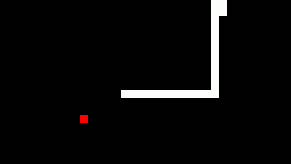

Jan 4, 2020
mc4
Minecraft-like multiplayer voxel building game. Runs in a web browser. Click to play!



May 28, 2018
Snake AI
This is a program that trains a neural network to play the Snake game. It's my first attempt at creating a neural network. It works semi-reliably, but it takes a long time to train.
YouTube video: https://youtu.be/4vr-2cWKyPI